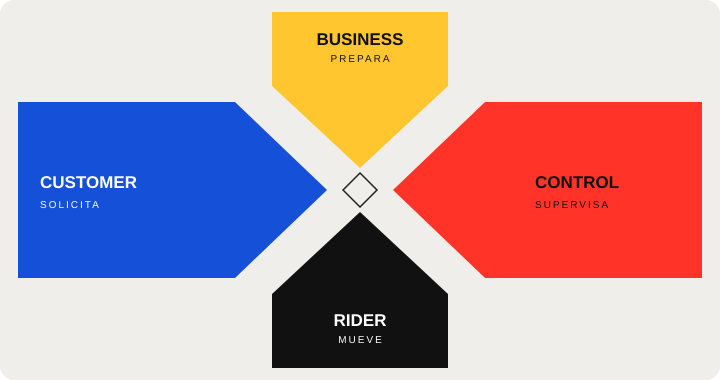

01 / PRIMER ENFOQUEDESARROLLO INICIAL
Pedidos y
última milla.
Una propuesta para conectar solicitudes, preparación de pedidos y futuras entregas locales, todavía en desarrollo.
 DESSET
Comercio / Logística / Tecnología
DESSET
Comercio / Logística / Tecnología
UNA NUEVA FORMA DE CONECTAR
PERSONAS. NEGOCIOS. ENTREGAS.
DESSET desarrolla una plataforma para que los comercios puedan organizar pedidos y coordinar futuras entregas de última milla. Buscamos dialogar con negocios y aliados para validar la propuesta.
Nuestro primer enfoque es ayudar a conectar las solicitudes de los clientes, la preparación de los comercios y la distribución local. La plataforma todavía está en desarrollo.
Así se articula nuestro sistema02 / QUÉ ESTAMOS CONSTRUYENDO
Empezamos con una necesidad concreta: conectar pedidos y distribución. Paquetería y otros servicios son posibilidades futuras, no prestaciones disponibles.
Una propuesta para conectar solicitudes, preparación de pedidos y futuras entregas locales, todavía en desarrollo.
Desarrollo futuro de capacidades para trasladar bienes y conectar puntos de distribución.
Un ecosistema proyectado para compradores, negocios y nuevas modalidades comerciales.
03 / CÓMO SE ARTICULA
Nuestra arquitectura separa las necesidades de cada participante, con aplicaciones especializadas que deben validarse antes de su habilitación.
Descubrir opciones y solicitar pedidos cuando el servicio se habilite.
Organizar las solicitudes y la preparación de cada pedido.
Coordinar las futuras entregas entre comercios y clientes.
MODELO CONCEPTUAL · NO REPRESENTA UNA OPERACIÓN ACTIVA

Explorar opciones y gestionar solicitudes cuando el servicio esté habilitado.
Preparar pedidos y organizar la relación con sus clientes.
Coordinar el movimiento físico de bienes en el sistema.
Supervisar procesos y apoyar la trazabilidad prevista.
Arquitectura conceptual. No se anuncia disponibilidad de aplicaciones, seguimiento operativo ni contratación desde esta web.
04 / CON QUIÉNES CONSTRUIMOS
Una plataforma comercial solo tiene sentido cuando crea valor para quienes participan en ella.
Queremos conocer cómo gestionas las solicitudes de tus clientes, preparas los pedidos y coordinas las entregas. Esa información ayuda a diseñar una plataforma útil, antes de ponerla en funcionamiento.
Conversemos sobre tu comercioExplorar comercios y realizar solicitudes en las aplicaciones futuras, cuando se habiliten.
EXPERIENCIABuscamos conocer tus necesidades de venta, preparación de pedidos y reparto para desarrollar una propuesta práctica.
Conversemos sobre tu comercioQueremos conversar con personas y organizaciones que aporten experiencia comercial, logística y tecnológica.
Proponer una alianza05 / NUESTRO COMPROMISO
La confianza no se construye con cifras inventadas ni con promesas de cobertura. DESSET distingue la visión empresarial, los prototipos tecnológicos y los servicios que realmente pueden contratarse.
La web es informativa. Pedidos, pagos y aplicaciones comerciales aún no están habilitados aquí.
06 / CONTACTO Y RELACIONES
¿Tienes un comercio o quieres plantear una alianza? Cuéntanos cuál es tu actividad y qué problema buscas resolver. Puedes comenzar por los perfiles públicos enlazados aquí.